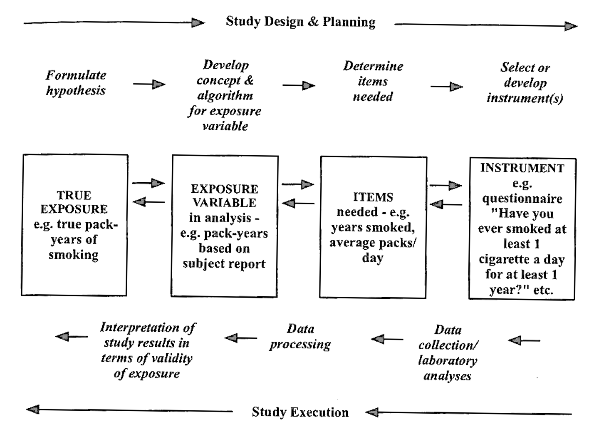
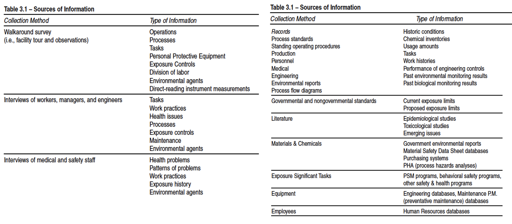
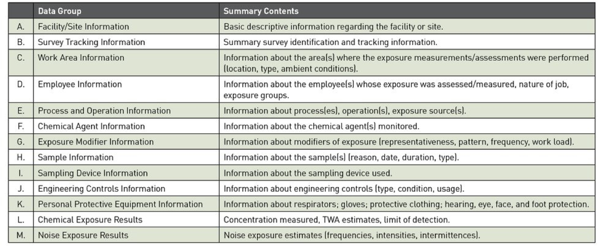
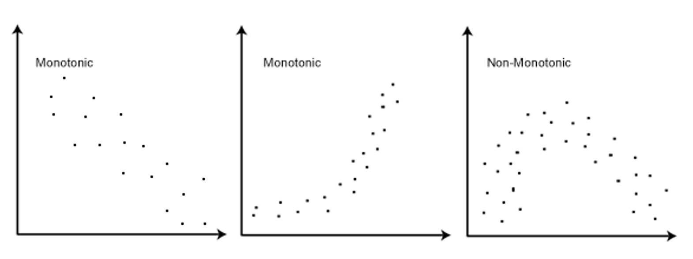
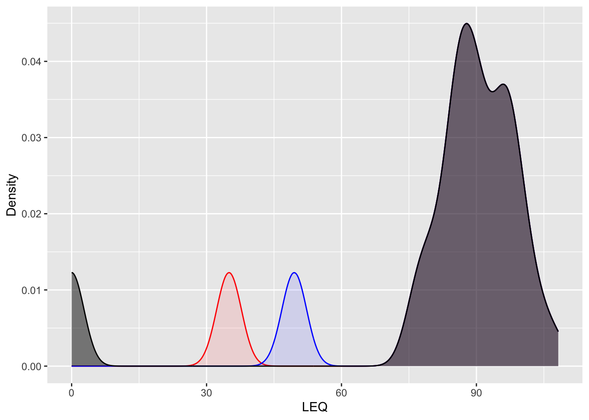
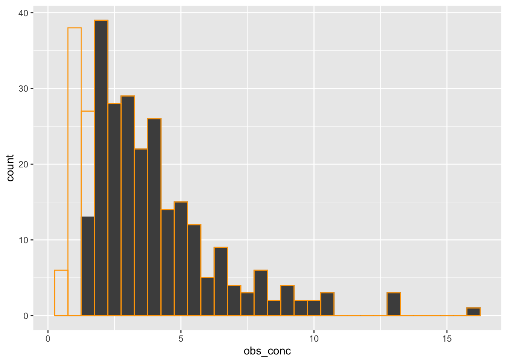
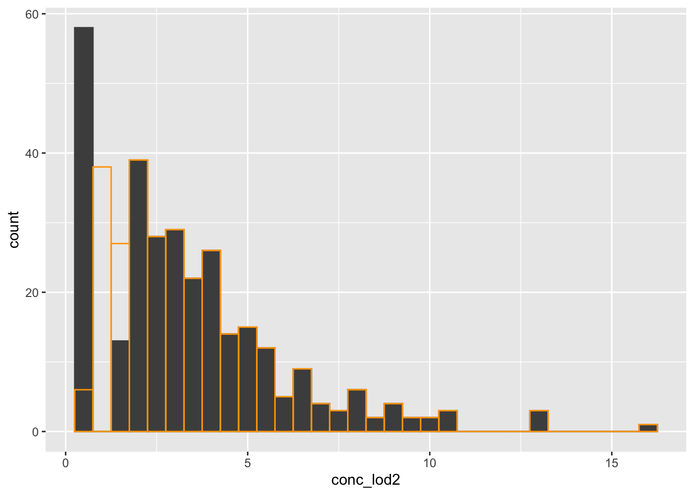
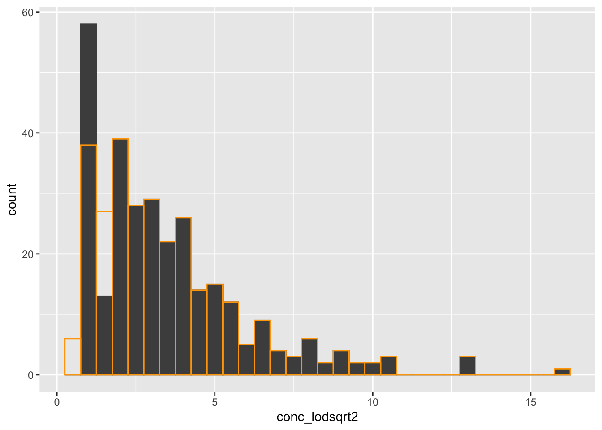

Types of data, descriptive statistics, and censoring (Lecture 4)
Click to view catchup R code
# set your working directory with `setwd()`!!# load packages we needlibrary(tidyverse)library(readxl)# read dataset excel file and make sure it's a tibbleehs655 <-read_xlsx("Dataset V1.xlsx") %>%as_tibble()
What we’ll cover today
The basics
Types and scales of data
Descriptive analysis and visualization
Distribution
Central tendency
Dispersion
Censored data
The basics: understanding exposure

Assessing exposures
Exposure data examples
Exposure data examples

Types and scales of data
Exercise
Imagine a study of exposure to 1,4 dioxane in drinking water among community members in Ann Arbor
Think of an example of potentially relevant exposure information for each of following data scales:
Binary
Nominal
Ordinal
Numeric
Data that might be available for exposure analysis

Tool to help document exposure measurements
AIHA Basic Exposure Assessment and Sampling Spreadsheet
# `na.rm` argument removes any values that are NA# otherwise, if NAs exist, the mean and median would return NA# !! USE `na.rm` WITH CAUTION !!ehs655 %>%summarize(mean_leq=mean(`Work-LEQ-dBA`, na.rm =TRUE), median_leq =median(`Work-LEQ-dBA`, na.rm =TRUE))
Pearson correlation coefficient between ranked variables
Raw scores \(X_i\), \(Y_i\) converted to ranks \(x_i\), \(y_i\)
Nonparametric (no distributional assumptions)
Assumptions:
Numeric or interval data
Monotonic relationship

Spearman correlation coefficient
# note method argument is set to "spearman"cor.test(x = ehs655$`Work-LEQ-dBA`, y = ehs655$`Age-baseline-years`, method ="spearman")
Warning in cor.test.default(x = ehs655$`Work-LEQ-dBA`, y =
ehs655$`Age-baseline-years`, : cannot compute exact p-value with ties
Spearman's rank correlation rho
data: ehs655$`Work-LEQ-dBA` and ehs655$`Age-baseline-years`
S = 1220766, p-value = 0.1663
alternative hypothesis: true rho is not equal to 0
sample estimates:
rho
0.09800029
Bivariate: Spearman vs Pearson correlation coefficient
Bivariate: cross-tabulation (xtabs() in R)
ehs655 %>%select(`Job-title`, County)
# A tibble: 201 × 2
`Job-title` County
<chr> <chr>
1 Laborer King
2 Laborer Pierce
3 Laborer Pierce
4 Laborer Snohomish
5 Laborer Kitsap
6 Laborer Thurston
7 Laborer King
8 Laborer King
9 Laborer Pierce
10 Laborer Snohomish
# ℹ 191 more rows
Let’s compare density plots of these results vs original
ehs655 %>%ggplot() +geom_density(aes(x = leq_lod2), color ="red", fill ="red", alpha =0.1) +geom_density(aes(x = leq_lodsqrt2), color ="blue", fill ="blue", alpha =0.1) +geom_density(aes(x =`Work-LEQ-dBA`), color ="black", fill ="black", alpha =0.5) +labs(x ="LEQ", y ="Density")

Better approach #3 to dealing with censored data
“\(\beta\)-substitution method” (Hewett and Ganser 2010)
Computes a \(\beta\) factor for an exposure (i.e., \(\beta\)*LOD) that can be used instead of \(LOD/2\) or \(LOD/\sqrt2\)
For lognormal data (e.g., chemicals), NOT normal data (e.g., noise)
Minimum \(N\) for this equation should be ≥5 when data are censored up to 50%
This method is beyond the class scope
But we have included an example below if you are interested
Censored data example
Let’s simulate some R code for some random, log-normal contaminant with a LOD of 1.5
We can visualize the distribution of the true contaminant levels versus what we observe due to values falling below the LOD of 1.5
sim_df %>%ggplot() +geom_histogram(aes(x = obs_conc), binwidth =0.5, fill ="grey30", color ="grey30") +geom_histogram(aes(x = true_conc), binwidth =0.5, fill ="transparent", color ="orange")

Method #1: \(LOD/2\)
Let’s create a new column where values at or below 1.5 are substituted with \(LOD/2\)
Let’s visualize the new distribution (grey) compared to the true distribution (orange)
sim_df %>%ggplot() +geom_histogram(aes(x = conc_lod2), binwidth =0.5, fill ="grey30", color ="grey30") +geom_histogram(aes(x = true_conc), binwidth =0.5, fill ="transparent", color ="orange")

Method #2: \(LOD/\sqrt2\)
Let’s create a new column where values at or below 1.5 are substituted with \(LOD/\sqrt2\)
Let’s visualize the new distribution (grey) compared to the true distribution (orange)
sim_df %>%ggplot() +geom_histogram(aes(x = conc_lodsqrt2), binwidth =0.5, fill ="grey30", color ="grey30") +geom_histogram(aes(x = true_conc), binwidth =0.5, fill ="transparent", color ="orange")

Method #3: \(\beta\)-substitution
Let’s create a new column where values at or below 1.5 are substituted using the \(\beta\)-substitution method. First let’s load the function to perform the method
source("beta_sub_function.R")
Click to view R Script
# Title: Beta substitution method# Author: Abas Shkembi (ashkembi@umich.edu) & Jie He (jayhe@umich.edu)# Last updated: May 8, 2025#------------------------------------------------------------### Description### conducts beta-substitution method for values <LOD### following Ganser & Hewett, JOEH, 2010#------------------------------------------------------------# create function to perform beta-substitutionbeta_substitution <-function(data, x_var, lod_var) {# Check for multiple, different LOD values in non-detects lod_values <-unique(data[[x_var]][data[[lod_var]] ==0])if (length(lod_values) >1) {stop("Multiple LOD values detected. All non-detects must have the same LOD.") } LOD <-if (length(lod_values) ==0) NAelse lod_values[1] n <-nrow(data) k <-sum(data[[lod_var]] ==0)if (k ==0) {return(list(beta_mean =NA_real_,beta_gm =NA_real_,substituted_mean =mean(data[[x_var]]),substituted_gm =exp(mean(log(data[[x_var]]))),substituted_gsd =NA_real_,substituted_x95 =NA_real_ )) }if (n - k <2) {stop("Insufficient detected values (need at least 2).") }# Step 1: Create a detects array detected <- data[[x_var]][data[[lod_var]] ==1]# Step 2: Calculate input and intermediate values y_bar <-mean(log(detected)) z <-qnorm(k / n) fz <-dnorm(z) / (1-pnorm(z)) sy <-sqrt((y_bar -log(LOD))^2/ (fz - z)^2) f_sy_z <- (1-pnorm(z - sy / n)) / (1-pnorm(z))# Step 3: Calculate beta_mean beta_mean <- (n / k) *pnorm(z - sy) *exp(-sy * z + sy^2/2)# Step 4: Substitute each non-detect with beta_mean * LOD, and calculate the sample mean data_substituted_mean <- data[[x_var]] data_substituted_mean[data[[lod_var]] ==0] <- beta_mean * LOD mean_sub <-mean(data_substituted_mean)# Step 5: Calculate beta_gm beta_gm <-exp(- (n * (n - k) / k *log(f_sy_z) - sy * z - (n - k) / (2* k * n) * sy^2))# Step 6: Substitute each non-detect with beta_gm * LOD, and calculate the sample GM data_substituted_gm <- data[[x_var]] data_substituted_gm[data[[lod_var]] ==0] <- beta_gm * LOD gm_sub <-exp(mean(log(data_substituted_gm)))# Step 7: Recalculate sy and then calculate the sample GSD ratio <- mean_sub / gm_subif (ratio >1) { sy_new <-sqrt((2* n / (n -1)) *log(ratio)) } else { sy_new <-0 } gsd_sub <-exp(sy_new)# Step 8: Calculate the sample 95th percentile x95 <-exp(log(gm_sub) - (sy_new^2) / (2* n) +1.645* sy_new)list(# the beta factor we are interested inbeta_mean = beta_mean, #*** in the original scalebeta_gm = beta_gm, # in the geometric scale# after replacing <LOD values with beta * LOD...substituted_mean = mean_sub, # the mean of the new distributionsubstituted_gm = gm_sub, # the geometric mean of the new distributionsubstituted_gsd = gsd_sub, # the geometric SD of the new distributionsubstituted_x95 = x95 # the 95th percentile of the new distribution )}
Then we can call the function: beta_substitution(data, x_var, lod_var)
data: your dataframe
x_var: the observed concentration data
lod_var: whether the observed concentration is above the LOD
# first set all values at or below LOD to LOD valuesim_df <- sim_df %>%mutate(obs_conc2 =ifelse(is.na(obs_conc), LOD, obs_conc))sim_bsub <-beta_substitution(sim_df, "obs_conc2", "above_LOD")sim_bsub